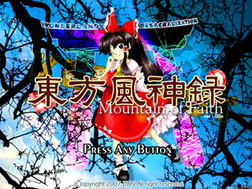

弾幕の伝統
東方風神録 〜 Mountain of Faith.

「東方風神録 〜 Mountain of Faith.」は少女弾幕シューティング（ＳＴＧ）です。
今作品は凝り固まったゲーム創作脳を柔らかくする作者脳トレ系ゲームです（大分嘘）
＊このゲームには過激な弾幕シーンが含まれております
小さなお子様や、弾幕アレルギーの方は医師に相談してください。
動作環境
必須環境
ＯＳ
Windows 2000/XP
なお、DirectX 9 (April 2007) 以降の最新版がインストールされていること
ＣＰＵ
Pentium 以降（もしくは互換）のCPU （推奨 1GH以上）
ビデオカード
DirectX9以上の DirectGraphic 対応の高速なビデオカード(推奨 VRAM 64M以上)
推奨環境
サウンド
Direct Sound対応のサウンドカード
その他
パッドコントローラ
ある程度の弾幕免疫
弾幕神への信仰心
１．概要
２．バックストーリー
３．プレイヤーキャラ紹介
４．操作方法
５．タイトル画面
６−い．システム 基本操作
６−ろ．システム 攻撃システム
６−は．システム アイテム
６−に．システム 信仰ポイント
６−ほ．システム エクステンド
６−へ．システム 小ネタ
７．ＦＡＱ
作者のページへ
プログラム本体、イメージデータ、曲データ、及びマニュアル全ての著作権は製作者ＺＵＮにあります。
著作者の許可無しで複製、転載、配布を禁じます。
2007 (C)opyright ZUN. All rights reserved.